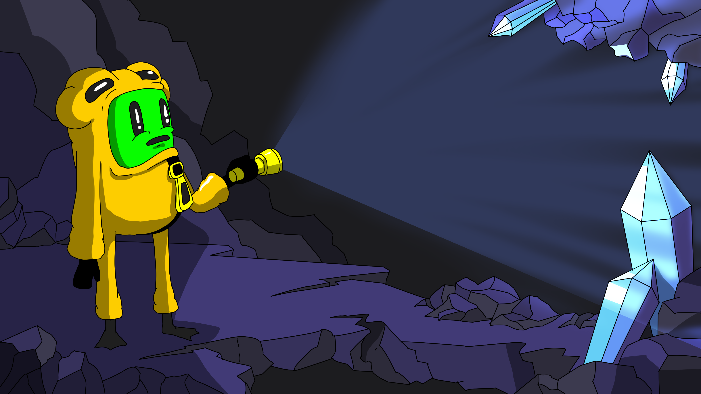
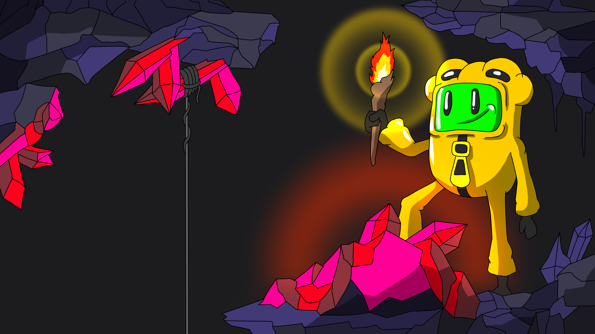
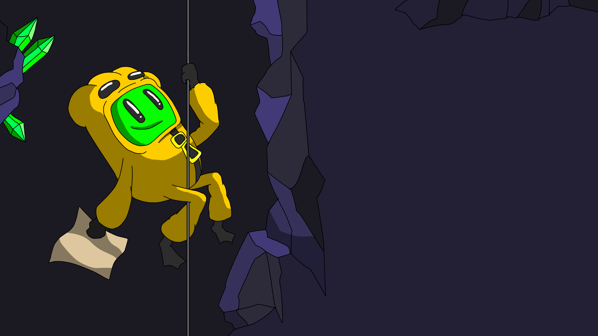
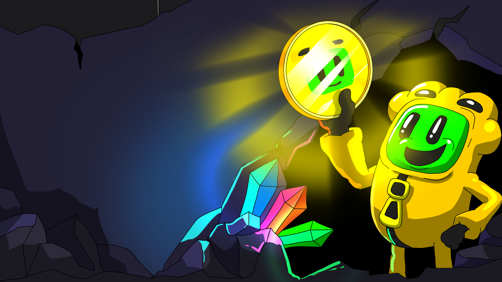

Jinchan’s light found blue crystals singing in the darkness. Earth’s underground sparkled like his home among the stars.

The red gems glowed as Jinchan passed by. Mysterious runes danced in their warm light—signs of secrets below.

Jinchan climbed higher, chasing a distant hum. Earth’s caves echoed with a promise of discovery.

Among golden crystals, Jinchan discovered a coin. For a moment, he felt the pull of his distant planet.